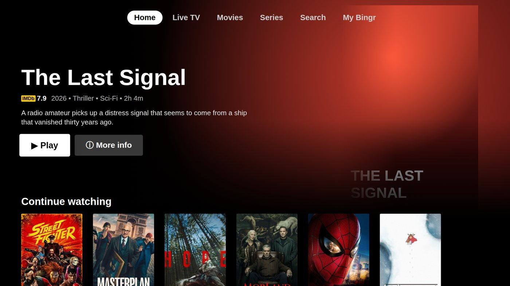
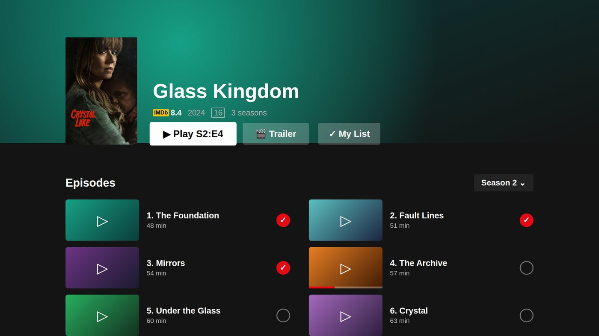

Bingr vs. IPTV Smarters en TiviMate
Drie IPTV-spelers, één vraag: welke past bij jouw apparaten en jouw manier van kijken? We zetten ze eerlijk naast elkaar, ook waar de andere twee iets kunnen dat Bingr niet kan.
Over deze vergelijking: wij maken Bingr. Wat we over IPTV Smarters Pro en TiviMate schrijven, komt uit hun eigen app-beschrijvingen in Google Play, de Samsung-appwinkel en de App Store (oktober 2026). Functies en prijzen kunnen veranderen; controleer ze bij de ontwikkelaar. Zie je een fout, laat het ons weten.
Wat ze gemeen hebben
Alle drie zijn spelers. Geen van de drie levert zenders, films of series: dat zeggen ze ook alle drie in hun eigen beschrijving. Je gebruikt je eigen abonnement en vult in elke app dezelfde soort gegevens in: een M3U-link of een Xtream Codes-login. Je kunt dus gewoon wisselen of ze naast elkaar proberen.
Naast elkaar
| Wat | Bingr | IPTV Smarters Pro | TiviMate |
|---|---|---|---|
| Ontwikkelaar | PixelForges | WHMCS Smarters | Armobsoft FZE |
| iPhone, iPad | JaIn de App Store | Apps met die naam in de App Store, van verschillende ontwikkelaars | Niet vermeld |
| Apple TV | JaTestFlight-bèta, tvOS 17+ | Idem | Niet vermeld |
| Mac | JamacOS 14+ | Niet vermeld | Niet vermeld |
| Windows | Jatestversie, Windows 10 en 11 | Niet vermeld | Niet vermeld |
| Android-telefoon en -tablet | Jatestversie (APK) | Ja | Niet geoptimaliseerd voor telefoons en tablets |
| Android TV, Google TV, Fire TV | Jatestversie (APK) | JaAndroid-boxen en Fire TV | Jagemaakt voor Android TV |
| Samsung TV | Neeniet ondersteund | Jain de Samsung-appwinkel | Niet vermeld |
| In je browser | Jabingr.online/web | Niet vermeld | Niet vermeld |
| Bronnen | Xtream Codes, M3U, MAC-portal, Plex, Jellyfin, Emby, Stremio | Xtream Codes, M3U | Xtream Codes, M3U, Stalker-portal |
| Tv-gids (EPG) | Ja | Ja | Ja |
| Terugkijken (catch-up) | Jaals je server het biedt | Ja | Ja |
| Meerdere beelden tegelijk | JaMultiview, tot 4 | Jamulti-screen | Jamultiview |
| Opnemen | Nee | Ja | Ja |
| Profielen en kinderslot | Profielen met pincode, kinderprofiel met leeftijdsgrens | Ouderlijk toezicht, meerdere gebruikers | Ouderlijk toezicht |
| Synchroon via een account | Japrofielen, servers, lijsten, voortgang | Niet vermeld | Niet vermeld |
| Prijs | Gratis; Lifetime eenmalig € 4,99 | Gratis (Samsung-appwinkel) | Gratis te installeren; Premium betaald |
| Levert zenders | Nee | Nee | Nee |
Niet vermeld: we vonden het niet in de officiële app-beschrijving. Dat betekent niet per se dat het ontbreekt. Gegevens van oktober 2026.
Hoeveel je tegelijk kunt kijken, hangt ook af van je IPTV-aanbieder: Bingr laat er zoveel toe als je abonnement bij Bingr, maar je aanbieder bepaalt hoeveel verbindingen jouw abonnement daar heeft.
IPTV Smarters Pro
IPTV Smarters Pro van WHMCS Smarters is een van de bekendste IPTV-spelers. Volgens de beschrijving van de ontwikkelaar speelt hij live tv, films, series en terugkijken, met tv-gids, meerdere schermen tegelijk, opnemen, ouderlijk toezicht, een externe speler en Chromecast, op Android-telefoons, Android-boxen en Fire TV. In de Samsung-appwinkel staat hij als gratis app met ondersteuning voor Xtream Codes.
In de App Store staan meerdere apps met Smarters in de naam, van verschillende ontwikkelaars en met verschillende prijzen. Kijk daar dus goed welke ontwikkelaar erbij staat.
TiviMate
TiviMate van Armobsoft FZE is volgens Google Play gemaakt voor Android TV en bediening met de afstandsbediening, en niet geoptimaliseerd voor telefoons en tablets. Hij ondersteunt M3U, Xtream Codes en Stalker-portals, met een tv-gids als raster, meerdere afspeellijsten, favorieten, terugkijken, opnemen, zoeken, ouderlijk toezicht en multiview. De app is gratis te installeren; een betaalde Premium-upgrade ontgrendelt extra functies.
Bingr
Bingr is nieuwer en kiest een andere aanpak: één account voor iPhone, iPad, Apple TV, Mac, Android, Android TV, Windows en de browser, met profielen voor het hele huis, en een look die lijkt op Netflix. Naast IPTV speelt Bingr ook Plex, Jellyfin, Emby en Stremio af. Alle functies van de Apple-app.
Waar de anderen sterker zijn
- Opnemen: IPTV Smarters Pro en TiviMate kunnen opnemen; Bingr niet.
- Beschikbaarheid: Bingr staat in de App Store voor iPhone en iPad, maar nog niet in Google Play. Op Apple TV en Mac gebruik je de TestFlight-bèta, op Android en Windows de testversie, of je kijkt in de browser.
- Ervaring: de andere twee bestaan al jaren en hebben veel gebruikers op Android TV.


Welke past bij jou?
Een korte conclusie per situatie.
Je hebt iPhone, iPad, Apple TV of Mac
Kies Bingr. Het is gemaakt voor Apple, met een echte Apple TV- en Mac-app, en één account dat alles synchroon houdt. Download Bingr in de App Store of doe op Apple TV en Mac mee met de bèta.
Je kijkt vooral op een Android TV-box en wilt opnemen
Dan past TiviMate goed: gemaakt voor Android TV en de afstandsbediening, met opnemen. Op telefoons en tablets is hij volgens Google Play niet geoptimaliseerd.
Je wilt een app op je Samsung-tv
IPTV Smarters Pro staat in de Samsung-appwinkel. Bingr is er niet voor Samsung-tv's: met Bingr kijk je op die tv via een Android TV-, Google TV- of Fire TV-stick, of in je browser.
Je huis is gemengd: Apple, Android en een laptop
Bingr: dezelfde profielen, servers en Mijn lijst op Apple, Android en in de browser, met één login.
Je hebt ook Plex, Jellyfin of Emby
Bingr speelt die naast je IPTV-abonnement af, in dezelfde app.
Je wilt kinderen een eigen, veilig profiel geven
Bingr heeft een kinderprofiel dat alleen kinderzenders en titels binnen de leeftijdsgrens toont, met een pincode voor de rest. De andere twee hebben ouderlijk toezicht.
Veelgestelde vragen
Kan ik mijn afspeellijst uit IPTV Smarters of TiviMate in Bingr gebruiken?
Is Bingr een alternatief voor IPTV Smarters op Apple TV?
Waarom kan Bingr niet opnemen?
Welke van de drie is gratis?
Hoeveel streams kan ik tegelijk kijken?
Meer over Bingr
IPTV Smarters, IPTV Smarters Pro en TiviMate zijn handelsmerken van hun eigenaars. Ze worden hier alleen beschrijvend genoemd. Bingr is niet verbonden aan deze apps of hun ontwikkelaars.
Bingr vs. IPTV Smarters and TiviMate
Three IPTV players, one question: which one suits your devices and the way you watch? We put them side by side honestly, including where the other two can do things Bingr can't.
About this comparison: we make Bingr. What we write about IPTV Smarters Pro and TiviMate comes from their own app descriptions on Google Play, Samsung's app store and the App Store (October 2026). Features and prices can change; check with the developer. Spotted a mistake? Let us know.
What they have in common
All three are players. None of them provides channels, movies or series: all three say so in their own descriptions. You use your own subscription and enter the same kind of details in each app: an M3U link or an Xtream Codes login. So you can simply switch, or try them side by side.
Side by side
| What | Bingr | IPTV Smarters Pro | TiviMate |
|---|---|---|---|
| Developer | PixelForges | WHMCS Smarters | Armobsoft FZE |
| iPhone, iPad | YesIn the App Store | Apps with that name in the App Store, from different developers | Not mentioned |
| Apple TV | YesTestFlight beta, tvOS 17+ | Same | Not mentioned |
| Mac | YesmacOS 14+ | Not mentioned | Not mentioned |
| Windows | Yestest version, Windows 10 and 11 | Not mentioned | Not mentioned |
| Android phone and tablet | Yestest version (APK) | Yes | Not optimised for phones and tablets |
| Android TV, Google TV, Fire TV | Yestest version (APK) | YesAndroid boxes and Fire TV | Yesmade for Android TV |
| Samsung TV | Nonot supported | Yesin Samsung's app store | Not mentioned |
| In your browser | Yesbingr.online/web | Not mentioned | Not mentioned |
| Sources | Xtream Codes, M3U, MAC-portal, Plex, Jellyfin, Emby, Stremio | Xtream Codes, M3U | Xtream Codes, M3U, Stalker-portal |
| TV guide (EPG) | Yes | Yes | Yes |
| Catch-up | Yesif your server offers it | Yes | Yes |
| Several pictures at once | YesMultiview, up to 4 | Yesmulti-screen | Yesmultiview |
| Recording | No | Yes | Yes |
| Profiles and parental controls | Profiles with PIN, kids profile with age limit | Parental controls, multiple users | Parental controls |
| Synced through an account | Yesprofiles, servers, lists, progress | Not mentioned | Not mentioned |
| Price | Free; Lifetime a one-time €4.99 | Free (Samsung app store) | Free to install; paid Premium |
| Provides channels | No | No | No |
Not mentioned: we didn't find it in the official app description. That doesn't necessarily mean it's missing. Data from October 2026.
How many you can watch at once also depends on your IPTV provider: Bingr allows as many as your Bingr plan, but your provider decides how many connections your subscription has there.
IPTV Smarters Pro
IPTV Smarters Pro by WHMCS Smarters is one of the best-known IPTV players. According to the developer's description it plays live TV, movies, series and catch-up, with a TV guide, multiple screens at once, recording, parental controls, an external player and Chromecast, on Android phones, Android boxes and Fire TV. In Samsung's app store it's listed as a free app with Xtream Codes support.
The App Store has several apps with Smarters in the name, from different developers and at different prices. So check carefully which developer is listed.
TiviMate
According to Google Play, TiviMate by Armobsoft FZE is made for Android TV and remote control navigation, and isn't optimised for phones and tablets. It supports M3U, Xtream Codes and Stalker portals, with a grid TV guide, multiple playlists, favourites, catch-up, recording, search, parental controls and multiview. The app is free to install; a paid Premium upgrade unlocks extra features.
Bingr
Bingr is newer and takes a different approach: one account for iPhone, iPad, Apple TV, Mac, Android, Android TV, Windows and the browser, with profiles for the whole household, and a look that resembles Netflix. Besides IPTV, Bingr also plays Plex, Jellyfin, Emby and Stremio. All features of the Apple app.
Where the others are stronger
- Recording: IPTV Smarters Pro and TiviMate can record; Bingr can't.
- Availability: Bingr is in the App Store for iPhone and iPad, but not yet on Google Play. On Apple TV and Mac you use the TestFlight beta, on Android and Windows the test version, or you watch in the browser.
- Track record: the other two have been around for years and have many users on Android TV.


Which one suits you?
A short conclusion per situation.
You have iPhone, iPad, Apple TV or Mac
Go for Bingr. It's built for Apple, with a real Apple TV and Mac app, and one account that keeps everything in sync. Get Bingr from the App Store, or join the beta on Apple TV and Mac.
You mostly watch on an Android TV box and want to record
Then TiviMate is a good fit: made for Android TV and the remote, with recording. According to Google Play it isn't optimised for phones and tablets.
You want an app on your Samsung TV
IPTV Smarters Pro is in Samsung's app store. Bingr isn't available for Samsung TVs: on that TV, watch Bingr via an Android TV, Google TV or Fire TV stick, or in your browser.
Your home is mixed: Apple, Android and a laptop
Bingr: the same profiles, servers and My List on Apple, Android and in the browser, with one login.
You also have Plex, Jellyfin or Emby
Bingr plays those alongside your IPTV subscription, in the same app.
You want kids to have their own safe profile
Bingr has a kids profile that only shows kids channels and titles within the age limit, with a PIN for the rest. The other two have parental controls.
Frequently asked questions
Can I use my playlist from IPTV Smarters or TiviMate in Bingr?
Is Bingr an alternative to IPTV Smarters on Apple TV?
Why can't Bingr record?
Which of the three is free?
How many streams can I watch at once?
More about Bingr
IPTV Smarters, IPTV Smarters Pro and TiviMate are trademarks of their respective owners. They're mentioned here for descriptive purposes only. Bingr isn't affiliated with these apps or their developers.